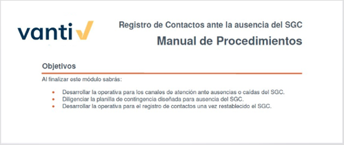
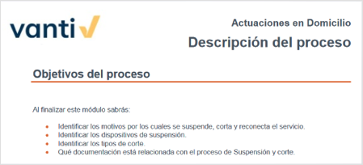
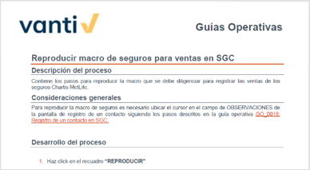
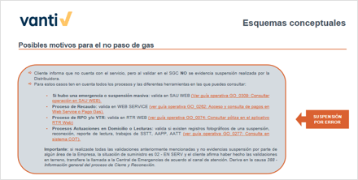
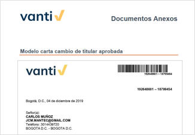
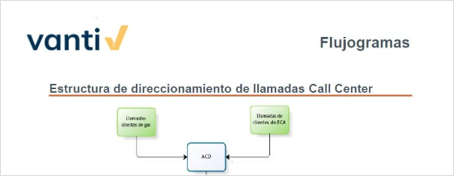
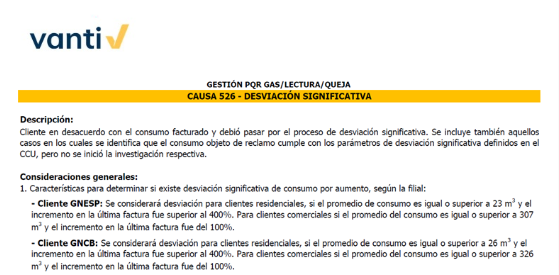
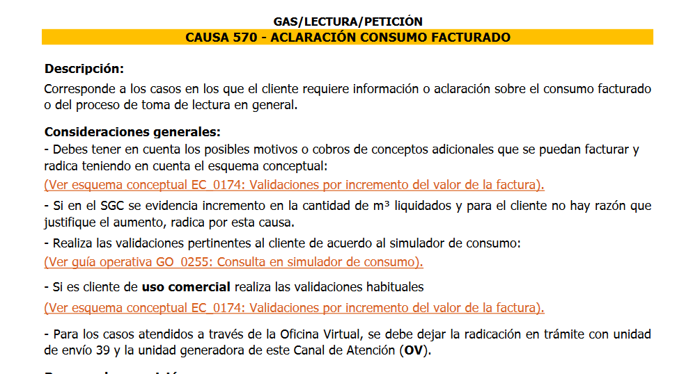
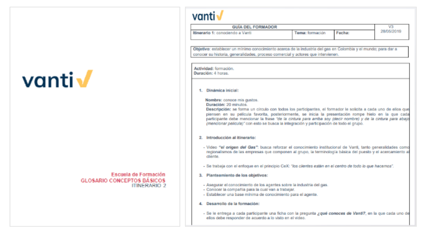

Definición
Es una herramienta de consulta óptima y de apoyo permanente en las actividades propias de la operación en Call Center, Atención Presencial y Análisis PQRS.
En ella, se encuentran los procedimientos y protocolos de atención para tramitar una PQRS desde los canales de atención y todas las actividades de postventa tales como toma de lectura, reparto, aplicación de pago, cobranza, entre otras.
Ingreso a la aplicación

En SolutionBook podrás encontrar los siguientes tipos de documentos, los cuales te ayudarán a gestionar de forma correcta cada una de las PQRS de nuestros clientes.
✅MANUALES
✅DESCRIPCIÓN DE PROCESOS
✅GUÍA OPERATIVAS
✅ESQUEMAS CONCEPTUALES
✅DOCUMENTOS ANEXOS
✅FLUJOS DE PROCESOS
✅ESCUELA DE FORMACIÓN
✅INSTRUCTIVOS
✅GUIONES
Resume las características y particularidades para la correcta atención de un grupo de clientes en específico, como "Políticas Cobro Mano de Obra".

Es el documento base para conocer los aspectos principales del proceso. En él encontramos los objetivos, toda la teoría relativa al proceso y los conceptos clave.

El documento se centra en la explicación de las acciones concretas a realizar en sistema. El usuario podrá seguir el procedimiento paso a paso con la ayuda de las imágenes.

Resumen de forma visual y gráfica de una parte teórica contemplada en la Descripción del Proceso, así como procedimientos, listados de consultas u operativas concretas. Pueden aportar información adicional importante para resolución de consultas.

Aportan información adicional y de interés para conocer en profundidad un proceso. Podemos encontrar diferentes tipos de documentos anexos (modelo de cartas tipo).

Son una presentación gráfica que establece de forma secuencial las acciones de un proceso o parte de este. Se utilizarán en aquellos casos en los que sea necesaria una explicación global y esquemática.

Es el conjunto de acciones para llevar a cabo una tarea (trámite y finalización de una PQRS).

Es el conjunto de acciones para llevar acabo la gestión de solicitudes, quejas, reclamos y peticiones.

Material (presentaciones, talleres, etc.), para la formación.
